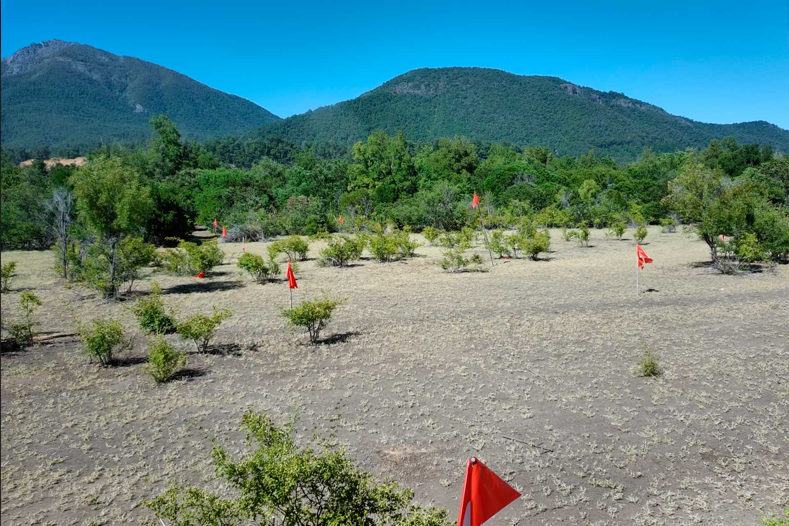

Parcelas de Agrado en la Precordillera de Ñuble
Tu refugio a 6 km de San Fabián de Alico. Parcelas con acceso al río, agua potable y luz soterrada.
Sin cables visibles para mantener la pureza del entorno.
Disponible en cada parcela, para que disfrutes de la comodidad y calidad de vida que mereces.
Sendero exclusi hacia la ribera del Río Ñuble.
San Fabián de Alico, Región de Ñuble
Segunda EtapaImágenes y videos de referencia para imaginar la experiencia de vivir en un entorno precordillerano único.
Situadas a solo 6 km de San Fabián de Alico, Las Pilcas ofrece la combinación perfecta entre la serenidad de la precordillera y la accesibilidad necesaria para tu día a día.
Si estás buscando un lugar único, con exclusividad y un entorno natural incomparable, nuestro equipo en San Fabián de Alico está listo para brindarte la asesoría personalizada que necesitas para tu inversión.